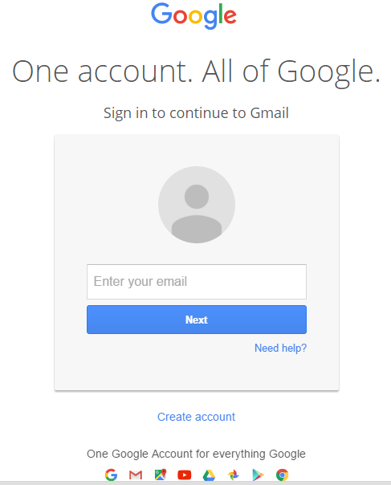

I tried to take the user through the different kinds of flows they could have, based on whether the user was in need of a particular service or wanted to know what was available near them.
I would have liked the prototype to be more realistic, but I didn't think of things like folds that would enable a more interactive experience until I saw other people's ideas.
Presentation Notes:
analysis part of cycle:
pointers:
-analyze user process from all roles (i.e. administrator versus customer use of a product)
-must come at analysis from multiple perspectives--delegate to different parts of the UX team (researcher vs designer)
conflicting goals:
Rapid prototyping is an informative experience. You realize that getting all that is in your head onto a piece of paper in a clear, but simple manner is hard. It's kind of like drawing out a movie of someone using your app. It's hard. My first attempt had my partner thinking that my app was just for ordering ride service around campus. Sod I added an extra section to broaden the understanding of my app on the next version. It gives you a new appreciation for the power of iteration. I got some cool ideas for what to do with the app if I had more time to expand its functionality. Partner feedback is invaluable-- they have that fresh perspective that I will not have, being so close to the nitty-gritties.
Being animated? My pockets are. This was a fun little exercise. I feel like I'm finally mastering *some* things in jQuery. Slowly does it, right?
This interface, all said, gives me a new appreciation for how hard it is to just engineer good interfaces. My designer brain says "do this!" My programming brain says "oh, but so much CODE." But I digress.
I think my use of color was good in this interface. I think
the contrast is easy to see--complementary colors, anyone? I also think that my user interaction was decently intuitive. I think that clicking the image to make it disappear was a pretty intuitive flow. Overall, I'd like to make it more interactive in the future, but I think for a simple style, it served its function.
First of all, I must say that the hard part of this project was not the jQuery, but rather the CSS. Target practice is hard when there is no slack given for any sort of failure to execute. One wrong move, and my design will not do its job.
That all said, I think this interface is decently intutive. Roll over a face on the legend, and you see that category of activity. Roll over a time on the frame, and you see that time period. I think one element of my design that if viewers see it, it's a nice easter egg (i.e. not intended to be obvious in the design) that if you roll over the title, you see the whole schedule.
I wish there was a way to make my desire for the viewers to roll over the images and text in the first place more obvious. Perhaps if I designed them with a 3d, button-like look, it would be easier for them to intuit that they need to do something with those elements.
Overall, I would be happy to continue to pursue and refine this project if given the time.
One form I use a lot is the Gmail login form. It's a simple form, which agrees with Bill DeRouchey's article, Learning IxD from Everyday Objects. Simplicity is important. The colors make sense with user action or inaction. The greyed out text in "Enter your email" implies incompleted action, which is typical of online forms. Black text is what you see when you type, which is also consistent with current convention. However, the colors on the next button and the need help button are the same blue. Like the example in DeRouchey's article with the record button and stop button, where one has a positive connotation and the other a negative one, the blue here is confusing. The help button should have a different color, to imply that the user cannot continue, versus the next button, which implies the user can continue in the flow. Overall a good design, but it could use some changes to be more intuitive.
